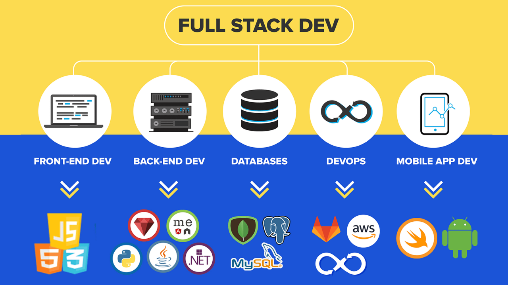

What is Required to Build a Website
Languages, Tools, Databases, Future Trends & Career Opportunities
Introduction to Website Development
Website development involves both frontend (user interface) and backend (server-side logic). It has evolved from static HTML pages to highly dynamic, real-time applications powered by advanced technologies.
Languages Used in Web Development
- HTML: Structures web content.
- CSS: Styles the presentation layer.
- JavaScript: Enables dynamic user interactions.
- Python: Streamlines backend processes with frameworks like Django/Flask.
- PHP: Still dominant in CMS platforms.
- Java: Used in high-security, enterprise-grade applications.
- Ruby: Quick development with Rails framework.
- SQL: Core to managing structured data.
- NoSQL: Key for big data, scalable solutions.
Popular Databases
- MySQL: Traditional, structured, relational data handling.
- PostgreSQL: Supports complex queries, GIS data.
- MongoDB: Schema-less JSON-like document database.
- Firebase: Realtime syncing & authentication.
- Redis: Lightning-fast caching layer.
Frontend vs Backend Language Usage (2024)

Database Popularity Over Time
Impact of Each Language & Stack
- HTML: Enables universal browser compatibility.
- JavaScript: Powers most UI interactivity and web logic.
- Python/Flask/Django: Simplifies development and boosts security.
- Node.js: Real-time, event-driven web services.
- React/Vue: Component-based, reusable UI design.
Future of Web Development
Web development is moving toward AI integration, voice interfaces, immersive 3D, and mixed reality. WebAssembly, Quantum-safe protocols, and enhanced security are revolutionizing how websites perform. Automation and no-code platforms will make development accessible to everyone, while full-stack AI developers will lead innovation.
Career Opportunities in Web Development
- Frontend Developer (React, Vue, Angular)
- Backend Developer (Node.js, Django, Ruby on Rails)
- Full Stack Developer
- DevOps Engineer
- Database Administrator (DBA)
- UI/UX Designer
- Mobile Web Developer
- Web Security Analyst
- CMS Expert (WordPress, Joomla)
How Web Development Impacts Other CS/IT Fields
- AI/ML: Web platforms are the delivery mechanism for ML apps.
- Cybersecurity: Secure web dev practices reduce vulnerabilities.
- Cloud Computing: Hosting scalable web services & microservices.
- Data Science: Dashboards and visualization tools are built on the web.
- IoT: Many IoT devices use web interfaces for monitoring.